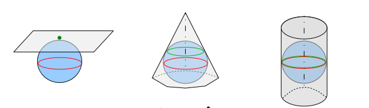
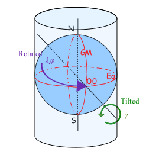
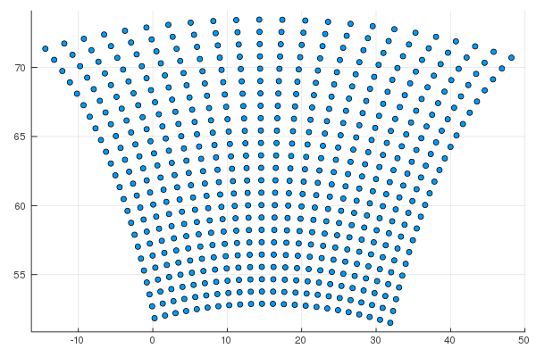

Domains.jl documentation
Installation
You can obtain Domains.jl using Julia's Pkg REPL-mode (hitting ] as the first character of the command prompt):
(v1.3) pkg> add https://github.com/Hirlam/Domains.jlDomain projections
There are four projections available in HARMONIE
- polar stereographic,
- lambert,
- mercator
- rotated mercator.
The model itself chooses the best (least distortion) projection among the first three given your domain specifications. The rotated mercator projection is selected through the variable LROTMER.
The polar stereographic project is defined at 90°N(S) whereas in GRIB1 it is defined at 60°N(S).

Polar stereographic, Lambert and Mercator projection

Rotated mercator projection
Model domain settings
For each domain we set variables related to the geometry and the resolution like:
The following variables related to the geometry and the resolution are required:
| Variable | Description |
|---|---|
TSTEP | model timestep in seconds |
NLON | number of points in x-direction |
NLAT | number of points in y-direction |
LONC | longitude of domain centre in degrees |
LATC | latitude of domain center in degrees |
LON0 | reference longitude of the projection in degrees |
LAT0 | reference latitude of the projection in degrees |
GSIZE | grid size in meters in both x- and y-direction |
EZONE | number of points over extension zone in both x- and y-direction |
LMRT | switch for rotated Mercator projection. If LMRT=.TRUE. LAT0 should be zero |
- If
LAT0 = 90, the projection is polar stereographic. - If
LAT0 < 90, the projection is lambert unlessLMRT=.TRUE.._
NLON and NLAT should satisfy the equation $5^a ⋅ 3^b ⋅ 2^c$, where either $a ≥ 1, b ≥ 0, c ≥ 0$ or $a=b=c=0$
Example
using Domains, Plots
d = readdomain("METCOOP25C")
gp = getgridpoints(d,gsize=100000)
scatter(getindex.(gp,1),getindex.(gp,2),legend=false)Will give

`NLON` and `NLAT` should satisfy the equation ``2^a ⋅ 3^b ⋅ 5^c``, where `` a ≥ 1 `` and ``b,c ≥ 0 ``.Domains.Domain — TypeDomain definitions
Base.in — Methodin(lonlat, d; with_ezone = false)
lonlat in d
lonlat ∈ dReturns true if lonlat is inside Domain d
Domains.getgridpoints — Methodgetgridpoints(d; gsize=d.GSIZE)Returns an array with the lonlat coordinates of the grid points
Domains.lcc2lonlat — Methodlcc2lonlat(d,xy)Returns lonlat coordinates for Lambert Conformal Conic projection coordinates xy using domain definitions from d
Domains.lonlat2lcc — Methodlonlat2lcc(d,lonlat)Returns Lambert Conformal Conic projection coordinates for lonlat using domain definition from d
Domains.readdomain — Methodreaddomain(domainname)Returns a Domain
Domains.Plcc — MethodPlcc(d)Returns a Lambert Conformal Conic Proj4.Projection based on domain definitions in d
Domains.Plonlat — MethodPlonlat()Returns longlat Proj4.Projection
Domains.get_lcc_val — Methodget_lcc_val(d)Returns a named tuple with boundary values of the domain in projected coordinates